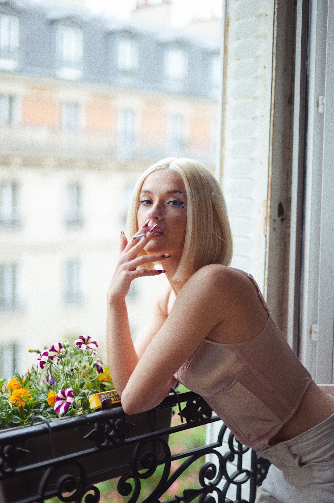
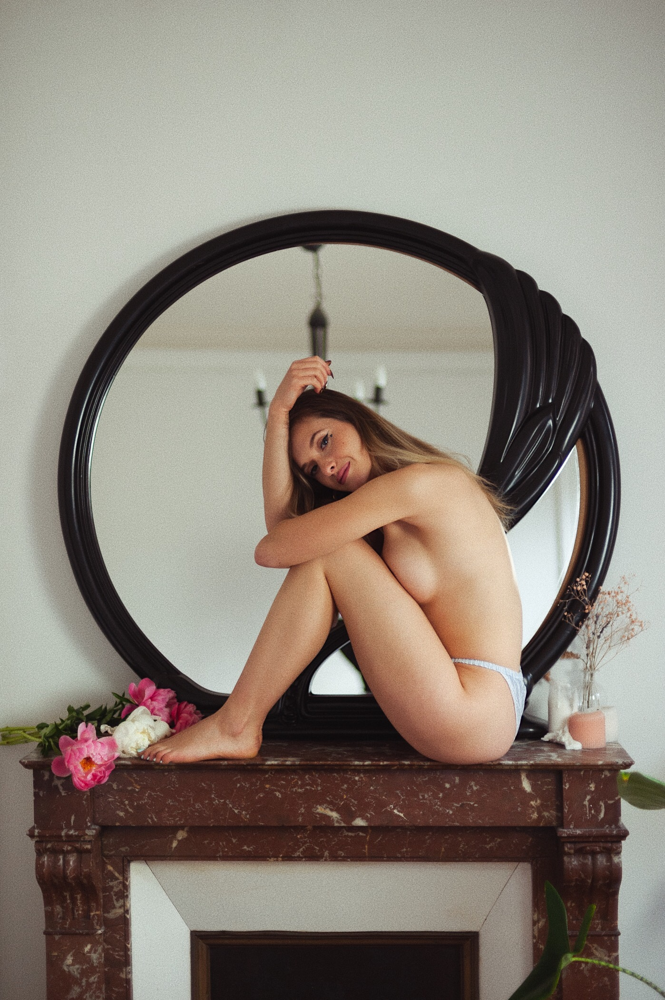
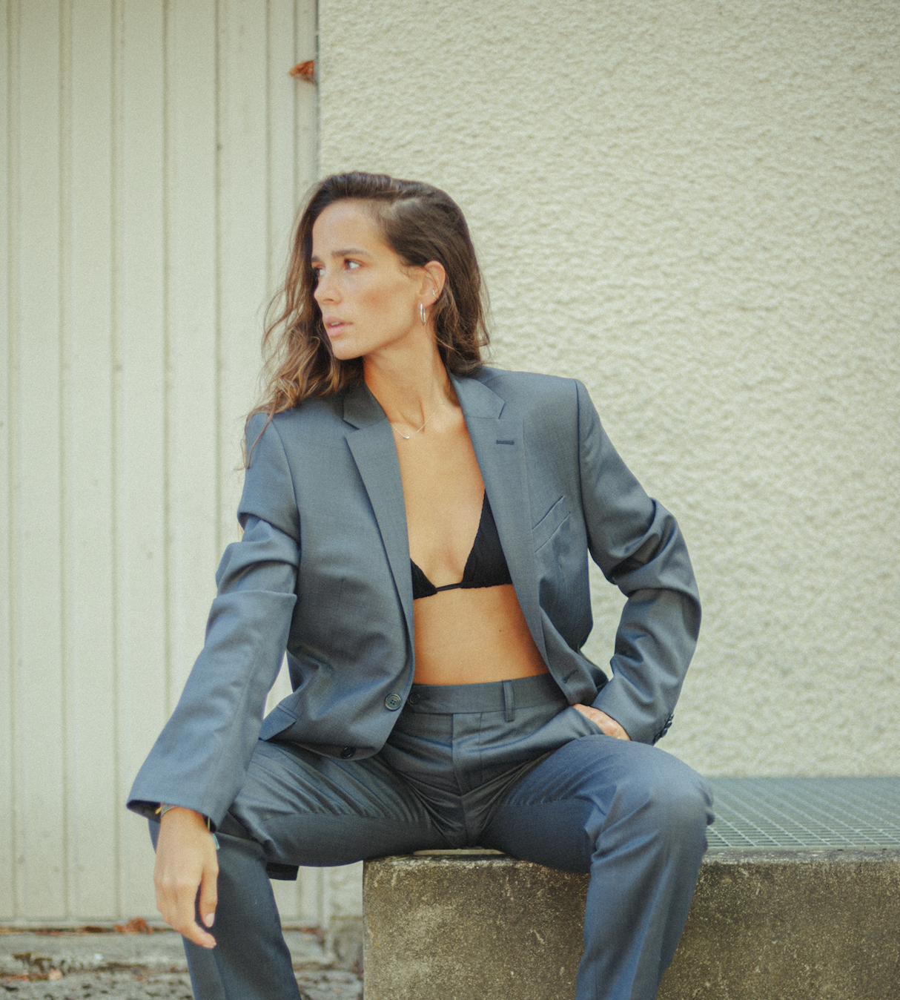
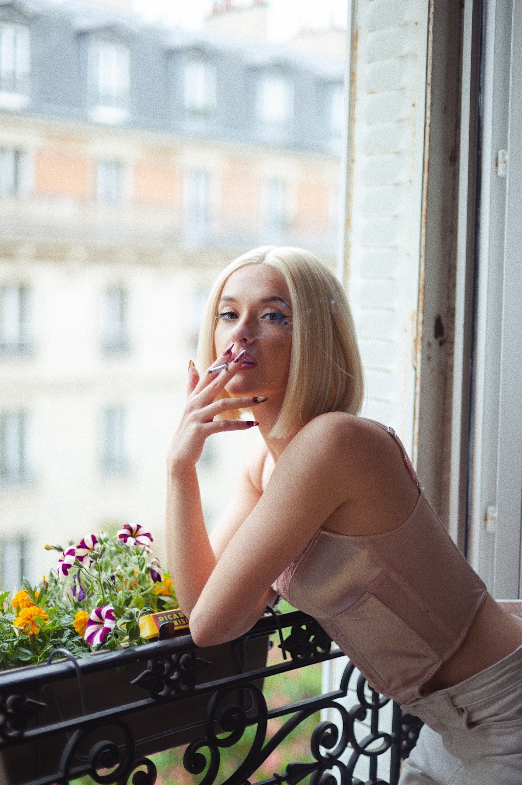
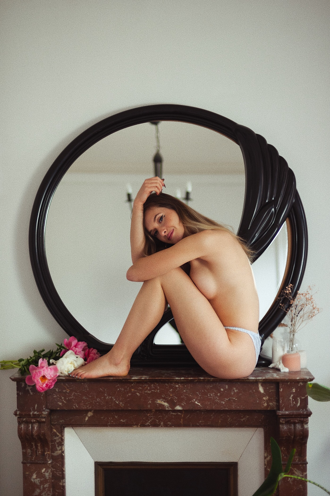
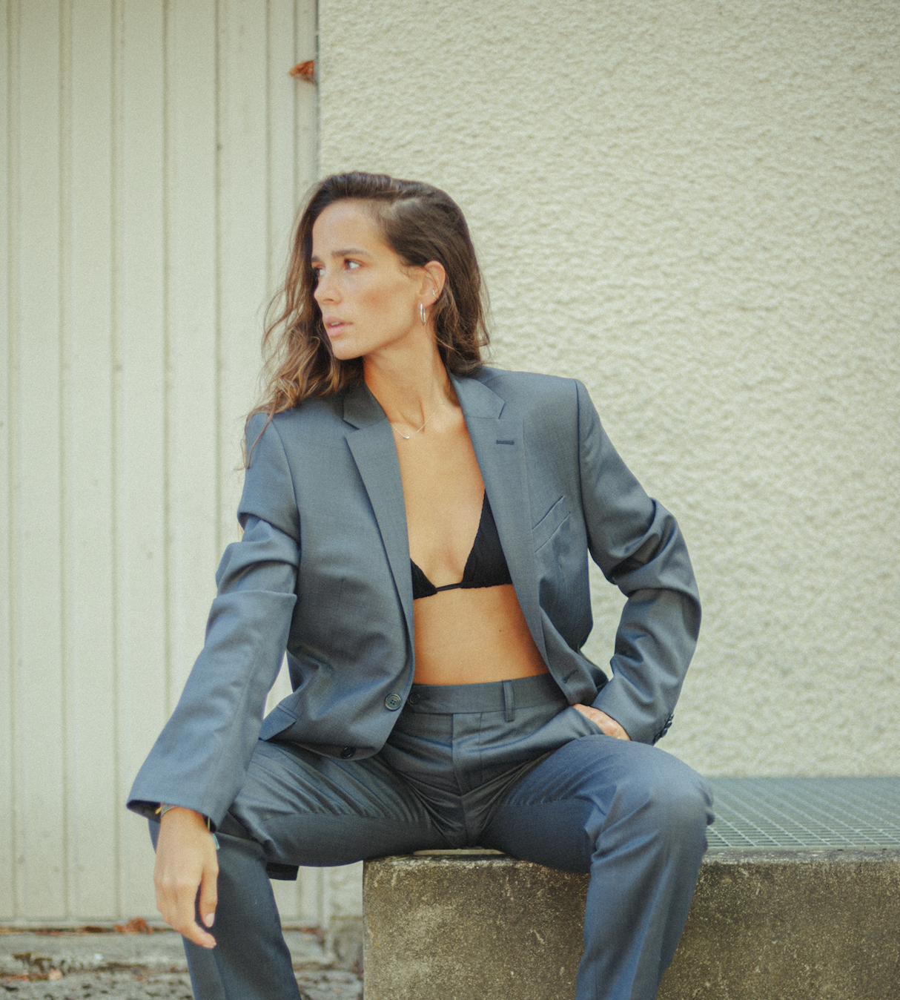

EMILIE CHARRIER | photographie & marketing digital

Je m'appelle Emilie. Je suis chef de projet webmarketing international junior et suis photographe spécialisée dans les portraits et la danse. Je fais des prestations pour des particuliers et également pour des professionnels tant en tant que photographe qu'en tant que community manager & webdesigner.
Je suis à l'écoute pour tout nouveau projet ! 📣
Intéressé ? Contactez-moi sur Malt !Je suis photographe & retoucheuse spécialisée dans les portraits et la danse. Je fais des prestations pour des particuliers (portraits, famille, grossesse, baptême, équitation...) et également pour des professionnels (prêt-à-porter, bijoux...). Je peux également réaliser des Directions Artistiques adaptées à vos projets - réalisation de moodboards personnalisés.
En supplément : mise en relation avec mannequins, studio, maquilleur/se, coiffeur/se, styliste...
J’accompagne les entreprises et professionels dans leurs projets de community management (stratégie social média, e-reputation, animation des communautés, planning éditorial, création de contenus, analyse des résultats... entres autres).
Je vous aide à réaliser et/ou à développer votre communication web (création d'interfaces pensées expérience utilisateur et développées sur WordPress, réalisation de maquettes, optimisation SEO, développement Wordpress, etc...
 


En voir plus



En voir plus